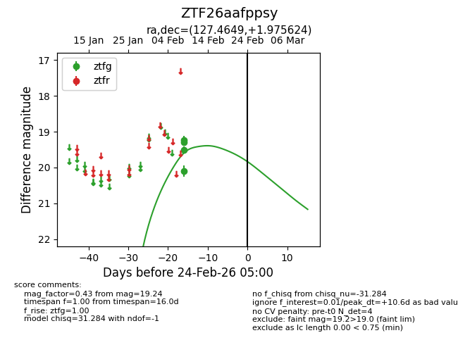
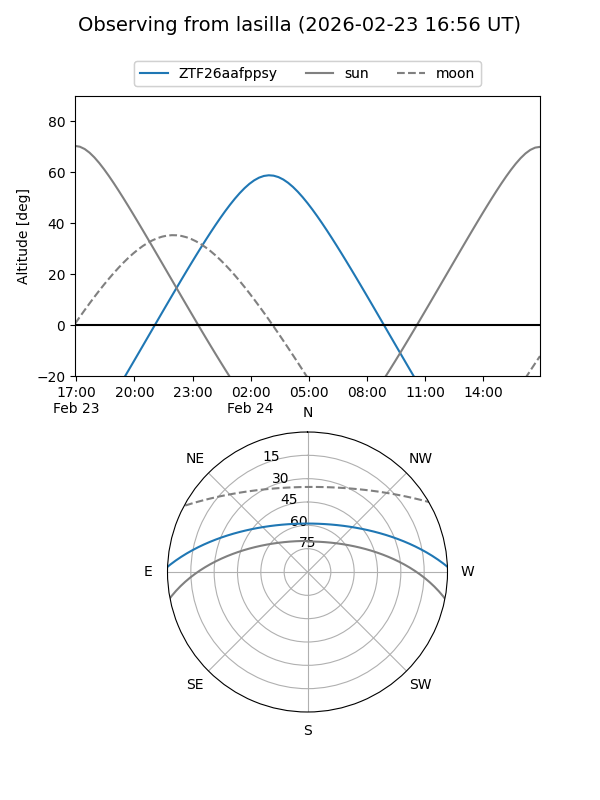
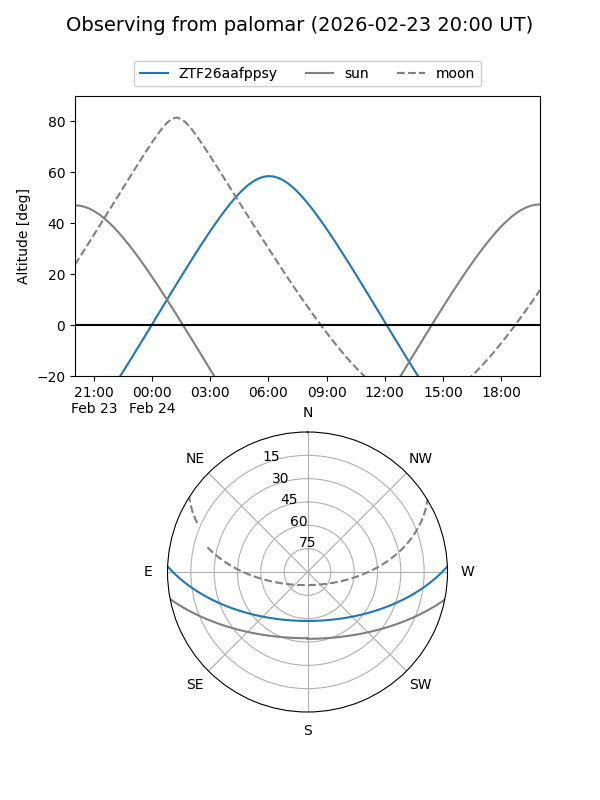

ZTF26aafppsy
Target ZTF26aafppsy at 2026-02-24 09:08
Aliases and brokers:
FINK: link
Lasair: link
ALeRCE: link
alt names
ZTF26aafppsy (ztf,fink_ztf)
Coordinates:
equatorial (ra, dec) = 127.4649,+1.97562
equatorial (HMS+DMS) = 08:29:51.58,+01:58:32.25
galactic (l, b) = (222.8611,+22.70964)
Flags:
Photometry:
last ztfg=19.24
4 ztfg detections
Lightcurve

Visibility


Additional plots